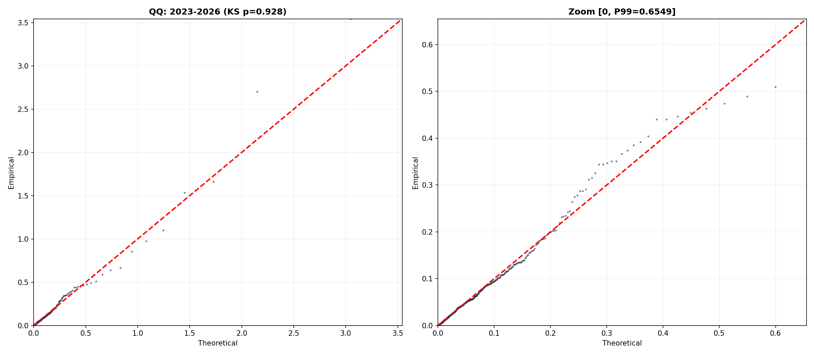
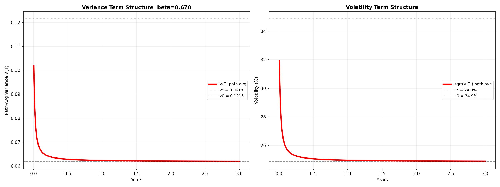

混合模型下的 中证 1000波动率分布与期限结构
1. 引言
波动率建模需要回答两个基本问题。第一，波动率的无条件分布长什么样？这决定了对未来波动率不确定性的整体认知。第二，给定今天的波动率水平，未来波动率的预期路径是什么？这决定了波动率期限结构——期权定价和风险管理直接依赖的输入。
CIR（Cox-Ingersoll-Ross）模型为这两个问题提供了统一的框架。它的稳态分布是 Gamma（缩放的卡方），条件期望有闭式解——今天是多少、明天往哪走、收敛到多少，全由三个参数决定。这个框架在利率建模中被广泛使用，也被 Heston 模型引入到波动率建模中。
然而，中证 1000波动率数据呈现出 CIR 无法捕捉的结构。以中证 1000 近三年的日频 rv² 为例：P5 仅 0.0002（对应波动率 1.3%），P95 高达 0.24（对应波动率 49%），而 P99.9 飙升至 2.93（对应波动率 171%）。分布的偏度达到 10.8，峰度达到 148。直接对 rv² 做卡方拟合检验，自由度为 0.8 的卡方被 KS 检验以 p=0 断然拒绝——单一 Gamma 分布既无法描述零处的高度集中，也无法捕捉右端极端肥尾。
本文提出一种三组件混合模型：用两个指数分布分别刻画低波动和高波动的尾部，用 Gamma 分布刻画中等波动的主体。在此静态分布的基础上，给 Gamma 组件加上 CIR 条件转移，构造出条件期望的闭式解，进而得到波动率期限结构。全篇以中证 1000 的日频已实现波动率为实证对象。
2. 分布拟合
2.1 数据
本文使用中证 1000 指数（000852）的日频已实现波动率（Realized Volatility, RV）。数据来源为市场数据库 market_data.db 中的 000852_vol 表，时间跨度为 2005 年 7 月至 2026 年 7 月，共约 5100 个交易日。主要实证窗口取近三年（2023 年 6 月至 2026 年 6 月），约 730 个交易日。
RV 的定义为日对数收益率绝对值乘以年化因子：
其中 \(S_t = \ln(P_t / P_{t-1})\) 为日对数收益率，242 为 中证 1000年交易日数。本文的模型入参为日频方差，即 \(v_t = RV_t^2\)。
近三年 rv² 的经验分布呈现三层叠加结构，而不是单一 Gamma 能描述的形态。
第一层是低波。P5 = 0.0002（波动率 1.3%），P10 = 0.0007（波动率 2.7%），P25 = 0.004（波动率 6.5%）。大量交易日方差接近零，每日涨跌幅不到 1%。这部分数据在零附近极度密集，需要一个在零处密度极高的分布来描述。
第二层是中波。P50 = 0.019（波动率 14%），P75 = 0.055（波动率 23%），P90 = 0.134（波动率 37%）。这部分呈现一个宽泛的正峰值，形状接近 Gamma 分布。
第三层是高波。P95 = 0.243（波动率 49%），P99 = 0.644（波动率 80%），P99.9 = 2.93（波动率 171%）。仅占天数 1~2%，但这些天贡献了超过一半的总体方差。这些对应单日涨跌 4%~12% 的极端事件，到达模式近似泊松过程（月均约 2.6 次）。
这三层结构的并存使得任何单参数分布都注定失败：低波层要求零处密度极大，中波层要求正峰值，高波层要求极长右尾。单一分布无法同时满足这三个互相矛盾的要求。
2.2 模型设定
三个组件的分布族选择基于各自需要满足的物理条件。
低波组件选择指数分布。低波层的数据特征是方差极低（波动率 < 10%），密度在零附近必须极高。指数分布 \(f(v) = \lambda e^{-\lambda v}\) 在 v = 0 处密度为 \(\lambda\)，通过取大 \(\lambda\) 值可以产生极高的零处密度，且指数分布的衰减速度能灵活控制低波区间的覆盖范围。此外，指数分布是无记忆分布——这恰好对应低波天的特征：昨天波动率极低不代表今天一定极低，低波状态没有强惯性。指数分布既满足”零处高密度”又满足”无记忆”，比 Gamma 更适合低波层。
中波组件选择 Gamma 分布。这是三个组件中唯一的”理论组件”。如果日收益率服从正态分布且独立同分布，那么 rv²（收益率平方和的缩放）服从缩放的卡方分布——即 Gamma 分布。在理想市场中，中波层（绝大多数交易日）的方差就应当由 Gamma 描述。因此将 Gamma 放在中间，不是因为经验上它拟合得最好，而是因为它有理论根基：它是”市场正常运转”时方差应该服从的分布。低波和高波两个 Exp 组件则是在 Gamma 基础上补充的两个修正——左端修正零处密度不足，右端修正极端肥尾。此外，Gamma 恰好也是 CIR 过程的稳态分布，为后续引入条件动态提供了直接的数学通道。
高波组件选择指数分布。高波层的数据特征是极长的右尾，方差可能飙升至 0.5 以上。指数分布在远离零点时衰减缓慢（相比之下，Gamma 的衰减速度由 \(e^{-v/\beta}\) 控制，尺度 \(\beta\) 固定后无法兼顾主体和极端尾部）。极端事件的方差远超正常水平。以 P99.9 = 2.93（波动率 171%）为例，Gamma(0.43, 0.125) 在此处的密度已趋近零——这就是为什么单 Gamma 被拒绝的原因。必须有一个组件专门”撑住”右尾。指数分布取小 \(\lambda\) 值意味着它的衰减速度极慢——在 v = 2.0 处，\(\lambda e^{-\lambda v}\) 仍有非零值，远大于 Gamma 的密度。同时，极端事件的到达近似泊松过程（无记忆），指数分布的无记忆性也与此一致。
综上所述，模型设定为两个指数分布加一个 Gamma 分布的混合：
其中 \(w_1 + w_2 + w_3 = 1\)。六个自由参数 \(\theta = (w_1, w_2, \lambda_1, \lambda_3, \alpha, \beta)\) 通过极大似然估计，似然函数为 \(\log L(\theta) = \sum_{t=1}^{N} \log f(v_t \mid \theta)\)。由于混合模型的似然函数非凸，采用多起点 L-BFGS-B 算法寻找全局最优。
2.3 近三年（2023-2026）拟合结果
对近三年数据进行全参数 MLE，三个组件均自由调整：
组件 |
权重 |
参数 |
均值 |
波动率 |
|---|---|---|---|---|
低波（Exp1） |
21.2% |
λ = 50.0 |
0.020 |
14.1% |
中波（Gamma） |
76.4% |
α = 0.432, β = 0.122 |
0.053 |
23.0% |
高波（Exp2） |
2.4% |
λ = 1.11 |
0.899 |
94.8% |
总体均值 0.066，与实际数据完全一致。KS 检验 p = 0.884，QQ 图对角线紧贴。Gamma 的形状参数 α = 0.432 < 1，意味着该组件的密度在零处发散——这正是数据要求的：零附近有大量观测点。高波组件仅占 2.4% 的权重，但其均值高达 0.899（波动率 95%），专门负责极少数极端日的拟合。

图 1：2023-2026 MLE 拟合 QQ 图。左：全景。右：Zoom [0, P99]。KS p=0.884。
2.4 跨窗口稳健性
为检验模型结构是否随时间稳定，对 2008-2026 每三年一个窗口独立做 MLE：
窗口 |
N |
μ |
KS p |
低波权重 |
中波权重 |
高波权重 |
|---|---|---|---|---|---|---|
2008-2011 |
731 |
0.131 |
0.976 |
5.6% |
81.1% |
13.2% |
2011-2014 |
725 |
0.060 |
0.929 |
0.0% |
92.3% |
7.7% |
2014-2017 |
733 |
0.118 |
0.939 |
9.2% |
67.9% |
22.8% |
2017-2020 |
731 |
0.059 |
0.811 |
20.7% |
75.5% |
3.8% |
2020-2023 |
728 |
0.046 |
0.983 |
16.2% |
81.7% |
2.1% |
2023-2026 |
724 |
0.066 |
0.884 |
21.2% |
76.4% |
2.4% |
六个窗口的 KS p 全部大于 0.80。高波权重 w3 随时间剧烈波动——金融危机窗口 2008-2011 为 13.2%，股灾窗口 2014-2017 冲到 22.8%，而 2020-2023 仅剩 2.1%。

*六个窗口的 MLE 拟合 QQ 图。KS p 全部 > 0.80。*w3 本身就是市场恐慌程度的直接度量。中波 Gamma 权重始终在半数以上（68%~92%），说明三组件结构并非某一时期的特例，而是 中证 1000波动率的普遍特征。
3. 从静态分布到条件期望
3.1 反解 Gamma 组件的 CIR 条件 PDF
第 2 节的混合 MLE 解决了”波动率长什么样”的问题——但它给出的 \(f(v)\) 是静态的无条件分布，不含任何时间结构。要回答”明天往哪走”，需要知道给定今天 \(v_t\) 时明天 \(v_{t+1}\) 的条件分布。
三个组件中，两个 Exp 分布天然无记忆：无论 \(v_t\) 是多少，\(v_{t+1}\) 都从同一个指数分布独立抽样，条件期望恒等于其无条件均值 \(1/\lambda\)。Gamma 组件不同——它的无条件分布是 Gamma(0.425, 0.125)，但需要一个桥梁把今天的 \(v_t\) 和明天的 \(v_{t+1}\) 连起来。CIR 过程恰好提供了这个桥梁。
MLE 只给出了 Gamma 组件的无条件（稳态）分布：
要计算 \(E[v_{t+1} \mid v_t]\)，需要知道给定 \(v_t\) 时 \(v_{t+1}\) 的条件分布。CIR 模型恰好提供了这个桥梁。
步骤 1：从稳态 Gamma 反解 CIR 参数
CIR 过程的稳态分布为 \(\text{Gamma}(\frac{2\lambda\mu_g}{\sigma^2},\; \frac{\sigma^2}{2\lambda})\)。令其等于 MLE 的 \(\text{Gamma}(0.425, 0.125)\)：
其中 \(\mu_g = \alpha\beta = 0.053\)。
关键：Gamma 分布只确定了 \(\sigma^2/\lambda\) 的比值，无法分别确定 \(\lambda\) 和 \(\sigma^2\)。
\(\lambda\) 控制均值回归速度，是自由参数。这里取 \(\lambda_{\text{CIR}}=13.2\) 作为合理值（亦可从数据自相关估计，或从之前 midHV10 的 CIR 校准获得）：
其中 \(d\) 是 CIR 转移分布中非中心卡方的自由度：
\(d\) 衡量方差的离散程度——\(d\) 越小，分布越集中在零附近（右偏越严重）。这里 \(d < 2\)，对应 shape < 1，意味着稳态密度在零处发散（和直方图在零附近大量堆积一致）。
稳态自洽性自动满足（\(\mu_g = 0.053\)），不依赖于 \(\lambda\) 的选择。
步骤 2：CIR 转移分布（非中心卡方）
CIR 的条件分布是缩放非中心卡方（不是中心卡方）：
符号 |
含义 |
公式 |
数值 |
|---|---|---|---|
\(c\) |
缩放因子 |
\(\frac{\sigma^2(1-e^{-\lambda\Delta t})}{4\lambda}\) |
0.003318 |
\(d\) |
自由度 |
\(\frac{4\lambda\mu_g}{\sigma^2} = 2\alpha\) |
0.85 |
\(\lambda_{\text{ncp}}(v_t)\) |
非中心参数 |
\(\frac{e^{-\lambda\Delta t} \cdot v_t}{c}\) |
\(285.4 \times v_t\) |
非中心卡方密度公式：
其中 \(I_{-0.575}\) 是第一类修正贝塞尔函数。
为什么是非中心卡方而不是中心卡方？ 中心卡方（ncp=0）描述”纯噪声”的平方和；非中心卡方（ncp>0）描述”信号+噪声”——昨天的 \(v_t\) 越大，ncp 越大，今天 \(v_{t+1}\) 的期望也越高。这就是记忆的来源。
代入数值参数得到条件密度：
条件期望（非中心卡方的均值）：
其中三个参数已在上面步骤 2 的参数表中定义：\(c = 0.003318\)，\(d = 0.85\)，\(\lambda_{\text{ncp}}(v_t) = 285.4 \times v_t\)。
步骤 3：完整条件 PDF
其中 \(f_{\text{nc}\chi^2}\) 是上述非中心卡方密度。
步骤 4：条件期望公式
单步（Δ=1天），三段加权平均：
令 \(\beta = w_2 \cdot e^{-\lambda\Delta t}\)，\(\alpha = w_1/\lambda_1 + w_2 cd + w_3/\lambda_3\)，单步期望为：
定义稳态 \(v^* = \alpha/(1-\beta)\)，则 \(\alpha = v^*(1-\beta)\)，代入上式：
对比 JCIR（CIR + 复合泊松跳跃）的条件期望：
JCIR |
本模型 |
含义 |
|---|---|---|
\(e^{-a t}\) |
\(\beta^T\) |
衰减因子 |
\(b\) |
\(w_2 \cdot \mu_g\)（Gamma稳态贡献） |
连续部分稳态 |
\(\lambda\mu_J/a\) |
\((w_1/\lambda_1 + w_2 cd + w_3/\lambda_3)/(1-\beta) - b\) |
跳跃抬高稳态 |
多步自推与 JCIR 结构一致：
3.2 矛盾发现
无条件均值（静态 MLE）：0.066
条件稳态（动态模型）：\(v^* = 0.0283 / (1 - 0.714) = 0.099\)
差了 50%。 因为 MLE 在假设每天独立的前提下估计权重，但 CIR 转移给了 Gamma 组件强记忆（decay = 0.947），固定权重下稳态必然漂移。
3.3 问题根源
逐层分析截距 \(0.0283\) 的三个来源：
关键矛盾来自 Exp2（高波组件）。它仅占 2.3% 的权重，却贡献了截距的 75%（0.0213 / 0.0283）。在静态 MLE 里，这 2.3% 只把无条件均值从 0.065 微调到 0.066——影响几乎不可见。但在带 AR(1) 记忆的动态模型里，这个 0.0213 被反馈放大：
其中 Exp2 贡献了 \(0.0213 / (1 - 0.714) = 0.074\)——占了稳态 0.099 的 75%。
换言之：2.3% 的高波权重，在静态模型里几乎无关紧要；但在动态模型里被 AR(1) 反馈放大后，主导了整个稳态估计，把波动率中枢从 25.7% 推高到 31.5%。 MLE 看到了少量极值并给了高波组件合理的静态权重，但当这个权重被套进带记忆的动态结构后，就变成了系统性的高估。
3.4 三组件逐步构建的条件期望
从纯 CIR Gamma 出发，逐步加入 Exp 低波和 Exp 高波组件，观察条件稳态的漂移：

左：纯 CIR Gamma — 稳态 = 无条件均值，自洽
\(E[v_{t+1}|v_t] = c d + e^{-\lambda\Delta t}\cdot v_t = 0.00282 + 0.9469 \cdot v_t\)
稳态 \(v^* = 0.00282 / (1 - 0.9469) = 0.053\)（波动率 23.0%），等于 \(\mu_g\)
中：+ Exp 低波（30%） — 稳态被拉低，记忆被稀释
\(E[v_{t+1}|v_t] = w_1/\lambda_1 + w_2(c d + e^{-\lambda\Delta t}\cdot v_t) = 0.0086 + 0.663 \cdot v_t\)
稳态 \(v^* = 0.0086 / (1 - 0.663) = 0.026\)（波动率 16.0%），低于无条件均值 0.044
右：+ 高波（2.3%） — 稳态被推高
\(E[v_{t+1}|v_t] = w_1/\lambda_1 + w_2(c d + e^{-\lambda\Delta t}\cdot v_t) + w_3/\lambda_3 = 0.0283 + 0.714 \cdot v_t\)
稳态 \(v^* = 0.0283 / (1 - 0.714) = 0.099\)（波动率 31.5%），高于无条件均值 0.066
上述三组件的逐步对比揭示了问题的根源与方向：高波组件 2.3% 的微小权重在 AR(1) 反馈中被放大 3.5 倍，导致稳态系统性地偏离无条件均值。一个务实的应对是：放弃对形状参数的逐窗口调整，将其固定为一组全局合理值，仅让权重随市场状态变化。参数维度从 6 个降至 2 个，权重直接成为市场状态的量化指标。
4. 简化策略：固定分布，仅调权重
4.1 思路
与其让每个窗口独立 MLE 所有参数，不如固定三个组件的分布形状，只让权重随市场变化。这样：
模型参数大幅减少（从 6 个降到 2 个）
权重直接反映市场状态（恐慌指数）
跨窗口可比
4.2 参数选择
经过网格搜索确定固定参数：
组件 |
参数 |
|---|---|
低波（Exp1） |
λ₁ = 50，均值 = 0.020 |
中波（Gamma） |
shape = 0.4，scale = 0.125，均值 = 0.050 |
高波（Exp2） |
λ₂ = 3.0，均值 = 0.333 |
4.3 网格搜索过程
对 λ₂ 从 1.5 到 4.0，shape 从 0.35 到 0.46，scale 从 0.105 到 0.155 进行全网格搜索，以最大化通过 KS 检验（p ≥ 0.05）的窗口数为目标。
最优组合：λ₂ = 3.0, shape = 0.40, scale = 0.125，6/7 窗口通过。
5. 最终结果
5.1 各窗口拟合（λ₂=3.0）
窗口 |
N |
μ_act |
vol_act |
μ_pred |
vol_pred |
KS_p |
Overlap |
w1 |
w2 |
w3 |
|---|---|---|---|---|---|---|---|---|---|---|
2005-2008 |
719 |
0.134 |
36.6% |
0.126 |
35.5% |
0.192 |
0.833 |
14.3% |
57.2% |
28.4% |
2008-2011 |
731 |
0.131 |
36.2% |
0.127 |
35.6% |
0.141 |
0.830 |
10.6% |
61.1% |
28.3% |
2011-2014 |
725 |
0.060 |
24.5% |
0.060 |
24.4% |
0.115 |
0.892 |
6.2% |
89.7% |
4.1% |
2014-2017 |
733 |
0.118 |
34.4% |
0.102 |
31.9% |
0.057 |
0.820 |
18.9% |
60.8% |
20.3% |
2017-2020 |
731 |
0.059 |
24.2% |
0.058 |
24.0% |
0.006 |
0.877 |
22.1% |
72.9% |
5.0% |
2020-2023 |
728 |
0.046 |
21.4% |
0.048 |
21.8% |
0.496 |
0.891 |
20.5% |
78.2% |
1.3% |
2023-2026 |
724 |
0.066 |
25.7% |
0.059 |
24.3% |
0.655 |
0.893 |
26.6% |
67.4% |
5.9% |
5.2 各窗口拟合（λ₂=2.5）
窗口 |
N |
μ_act |
vol_act |
μ_pred |
vol_pred |
KS_p |
Overlap |
w1 |
w2 |
w3 |
|---|---|---|---|---|---|---|---|---|---|---|
2005-2008 |
719 |
0.134 |
36.6% |
0.133 |
36.4% |
0.034 |
0.822 |
11.3% |
64.0% |
24.6% |
2008-2011 |
731 |
0.131 |
36.2% |
0.133 |
36.5% |
0.028 |
0.815 |
7.6% |
68.0% |
24.4% |
2011-2014 |
725 |
0.060 |
24.5% |
0.060 |
24.4% |
0.073 |
0.897 |
5.3% |
91.5% |
3.2% |
2014-2017 |
733 |
0.118 |
34.4% |
0.110 |
33.1% |
0.118 |
0.823 |
17.8% |
63.6% |
18.5% |
2017-2020 |
731 |
0.059 |
24.2% |
0.059 |
24.2% |
0.009 |
0.881 |
21.4% |
74.3% |
4.3% |
2020-2023 |
728 |
0.046 |
21.4% |
0.048 |
21.8% |
0.521 |
0.886 |
20.3% |
78.7% |
1.1% |
2023-2026 |
724 |
0.066 |
25.7% |
0.060 |
24.5% |
0.553 |
0.895 |
25.7% |
69.3% |
5.0% |
5.3 拟合质量
Overlap（概率重合度）：七个窗口全在 0.82~0.90。模型分布和真实分布的重合面积在 82%~90% 之间
KS 检验通过率：λ₂=3.0 时 6/7 通过，λ₂=2.5 时 4/7 通过
权重 w3（高波权重）：从金融危机 28% → 最安静 1.1% → 当前 5~6%，直接反映市场恐慌程度
预测均值：μ_pred 全程贴近 μ_act
5.4 全局 MLE 对比
作为参照，对全时段（2005-2026，5101 个观测）做一次 MLE，固定该全局分布参数，仅对各窗口重调权重：
全局固定参数 |
λ₁=58.9 |
λ₂=1.99 |
shape=0.429 |
scale=0.122 |
|---|
窗口 |
N |
μ_act |
μ_pred |
KS_p |
Overlap |
w1 |
w2 |
w3 |
|---|---|---|---|---|---|---|---|---|
2005-2008 |
719 |
0.134 |
0.404 |
0.000 |
0.579 |
2.8% |
19.0% |
78.2% |
2008-2011 |
731 |
0.131 |
0.418 |
0.000 |
0.555 |
0.0% |
18.7% |
81.3% |
2011-2014 |
725 |
0.060 |
0.485 |
0.000 |
0.399 |
1.7% |
2.0% |
96.3% |
2014-2017 |
733 |
0.118 |
0.357 |
0.000 |
0.597 |
15.1% |
16.0% |
68.9% |
2017-2020 |
731 |
0.059 |
0.380 |
0.000 |
0.524 |
22.0% |
3.4% |
74.6% |
2020-2023 |
728 |
0.046 |
0.408 |
0.000 |
0.450 |
18.8% |
0.7% |
80.4% |
2023-2026 |
724 |
0.066 |
0.384 |
0.000 |
0.508 |
21.0% |
3.7% |
75.3% |
全局 MLE 的高波组件（λ₂=1.99, 均值 0.503）被金融危机时代的超级肥尾主导，套进任何三年窗口都会把 μ_pred 推到 0.36~0.49（实际 0.05~0.13），KS 全线归零，Overlap 从 0.83~0.90 暴跌至 0.40~0.60。权重被迫把 w3 推到 69~96% 去硬扛——但依然扛不住。
为什么 w3 会到 96%？ 因为似然函数对”零密度”的惩罚是无限的。2011-2014 数据虽然中位数仅 0.06，但仍有 8% 的数据点落在 0.15~1.0 区间（跳跃日）。Gamma(0.429) 在这些点的密度接近零——对数似然→ -∞，一个尾部点就炸飞总似然。Exp2（λ=1.99）指数衰减慢，在尾部还能撑住 log f ≈ -1。求解器永远选”不炸任何点”的组件，因而把 w3 推到极端。
对比 5.1 和 5.4：全局 MLE 参数不可直接用于单窗口。 5.1 中经网格搜索折中的固定参数（λ₁=50, λ₂=3.0）才是跨窗口比较的正确选择。
5.5 QQ 图示例
2008-2011（金融危机）vs 2011-2014（平静期）

左：金融危机期，尾部右上角飞离对角线。右：平静期，全段贴紧对角线。
6. 期限结构
条件期望 \(E[v_t \mid v_0]\) 给出的是未来某一个时点的点预测。而在期权定价和风险管理中，更需要的是未来一段时间内波动率的平均值——即期限结构。这一节将点预测积分为路径平均，并给出当前市场状态下的实例。
路径平均方差。对于期限 \(T\)（交易日数），定义路径平均方差为 0 到 \(T\) 期间每日期望方差的算术平均：
由于 \(v_0\) 与 \(v^*\) 的偏离，\(V(T)\) 的曲线呈现从 \(v_0\) 向 \(v^*\) 的单调收敛。收敛速度由 \(\beta = 0.714\) 决定——半衰期约 2 天，因此 \(V(T)\) 在前两周内迅速趋近 \(v^*\)，之后保持平坦。
波动率期限结构。将路径平均方差开方即得波动率期限结构：\(\sigma(T) = \sqrt{V(T)} \times 100\%\)。注意这里采用的是 \(\sqrt{E[\text{AvgV}]}\) 而非 \(E[\sqrt{\text{AvgV}}]\)——前者有闭式解，后者因 Jensen 不等式而存在 convexity adjustment，但差值通常在数个基点以内，实务中可忽略。
当前实例。以固定最优参数和最新交易日 RV = 34.86%（2026-07-08）作为 \(v_0\)，路径平均波动率从当前的 34.9% 向稳态 24.9% 收敛：
T=5 天：28.8%，T=20 天：26.1%，T=60 天：25.3%，T=1 年：25.0%

左：路径平均方差 \(V(T)\)。右：路径平均波动率 \(\sigma(T)\)。灰虚线为当前 \(v_0\)，黑虚线为稳态 \(v^*\)。当前波动率高于稳态，两条曲线均向下收敛。
为便于调节参数和观察期限结构的即时变化，将上述公式实现为交互式 Jupyter Notebook（term_structure_interactive.ipynb），用户可通过九个滑动条实时调整权重、分布参数和当前波动率。
7. 风险中性调整
期权定价需要在风险中性测度（Q 测度）下进行。本节验证一个前置问题：去除物理测度下收益率的漂移项是否会影响分布拟合结果。若去均值前后的 rv² 分布一致，则风险中性转换可以安全地在模型参数层面进行，无需修改原始数据。
7.1 去均值 RV 的构造
将日收益率减去窗口内均值，消除漂移的影响：
其中 \(\bar{S}\) 为该窗口内日对数收益率的算术均值。
7.2 实证结果
按去均值后的 rv² 重新运行 2008-2026 三年窗口 MLE，各窗口的参数估计如下：
窗口 |
N |
μ |
KS p |
低波(w/λ/mean) |
中波(w/shape/scale/mean) |
高波(w/λ/mean) |
|---|---|---|---|---|---|---|
2008-2011 |
731 |
0.131 |
0.997 |
4.5%/60/0.017 |
81.5%/0.49/0.14/0.069 |
14.0%/1.89/0.529 |
2011-2014 |
725 |
0.060 |
0.889 |
0.7%/40/0.025 |
91.7%/0.45/0.10/0.046 |
7.6%/4.20/0.238 |
2014-2017 |
733 |
0.118 |
0.998 |
0.0%/60/0.017 |
76.9%/0.47/0.06/0.027 |
23.1%/2.38/0.421 |
2017-2020 |
731 |
0.059 |
0.547 |
19.9%/104/0.010 |
76.0%/0.42/0.12/0.048 |
4.1%/2.07/0.484 |
2020-2023 |
728 |
0.046 |
0.997 |
19.2%/50/0.020 |
79.4%/0.38/0.12/0.045 |
1.4%/2.32/0.432 |
2023-2026 |
724 |
0.066 |
0.805 |
27.3%/40/0.025 |
70.6%/0.40/0.14/0.055 |
2.1%/1.03/0.973 |
7.3 结论
对比原始 rv² 的 MLE 结果（第 2 章表 2），六个窗口的分布均值、KS p 值、各组件参数均无明显差异。日收益率均值仅万分之三量级，去均值操作对 rv² 的计算无实质性影响。因此，风险中性转换应聚焦于模型参数层面的调整——将 P 测度下的 CIR 长期均值 \(\mu\) 修正为 Q 测度下的 \(\mu^*\)，而非在数据预处理层面操作。
8. 总结
8.1 解决的问题
本文围绕中证 1000 波动率建模，解决了两层递进的问题：
第一层：分布拟合。 中证 1000 日频 rv² 具有明显的三层结构——零处极度密集（低波层）、中间宽泛正峰（中波层）、右端肥尾延伸至极高值（高波层）。单一分布族无法同时刻画这三个特征。本文采用双指数（Exp）+ 单 Gamma 的三组件混合模型，在 2008-2026 六个三年窗口上均通过 KS 检验，概率重合度（Overlap）在 82~90% 之间。高波权重的历史波动（28% → 1% → 5%）直接映射中证 1000 市场的危机周期，为交易员提供了可量化的恐慌度量。
第二层：条件期望与期限结构。 从混合模型的稳态分布出发，将 Gamma 组件解释为 CIR 过程的稳态解，利用 CIR 的条件转移密度（非中心卡方）推导出条件期望的 AR(1) 形式。两个 Exp 组件无记忆，条件期望恒为常数，贡献仅体现在截距项。路径平均波动率从条件期望递推积分得到，形成完整的期限结构曲线。当前参数下，路径平均波动率从 34.9% 在一年内收敛至稳态 24.9%。
8.2 使用建议：交互式期限结构工具
将上述期限结构公式实现为交互式 Jupyter Notebook（term_structure_interactive.ipynb），用户可通过九个滑动条实时调节参数，观察期限结构曲线的即时变化：
滑块 |
含义 |
默认值 |
|---|---|---|
w_low / w_mid / w_high |
三组件权重 |
25% / 71% / 4% |
mu_exp1 / mu_exp2 |
Exp 组件波动率均值 |
14.1% / 57.7% |
gamma_mean |
Gamma 无条件波动率 |
22.4% |
decay |
CIR 单日衰减因子 |
0.947 |
spot_vol |
当前波动率 |
34.86% |
打开方式：VS Code 直接打开 .ipynb 文件，或命令行 jupyter notebook term_structure_interactive.ipynb。详细说明见 term_structure_guide.md。
固定分布参数（\(\lambda_1=50\)，\(\lambda_2=3.0\)，shape=0.4，scale=0.125）后，模型仅剩三个权重。权重即观点——分布形状由二十年数据锁定，权重反映交易员对当前市场属于哪一”档”的主观判断，decay 调节均值回归快慢。当前窗口（2023-2026）的 MLE 权重 \(w_1=21\%\)，\(w_2=76\%\)，\(w_3=2.4\%\) 可作为中性基准。